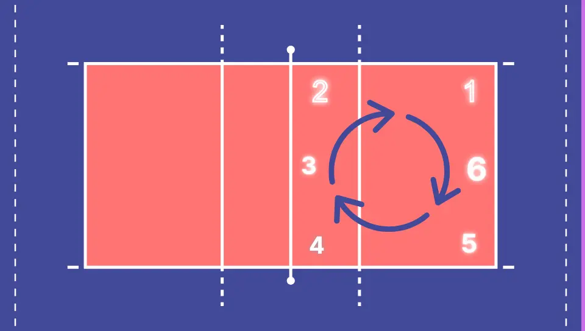

Este programa pretende ser de ayuda al asistente de los arbitros en los partidos de voleibol el cual se encarga de llevar (muchas veces de forma manual) los puntos de los equipos como las rotaciones de cada uno de ellos
En el voleibol, las rotaciones son como un baile en el que los jugadores cambian de posición en la cancha siguiendo un orden establecido. Cada jugador tiene un número asignado del 1 al 6, que corresponde a una posición específica en la cancha. Cuando un equipo gana el saque, los jugadores se mueven en sentido horario o antihorario para que cada uno ocupe la posición del siguiente número. Esto asegura que todos los jugadores tengan la oportunidad de estar en diferentes partes de la cancha y participar en diferentes roles durante el juego. Así, todos tienen su momento en el "escenario" y el equipo funciona como un equipo coordinado.
El equipo solo rota si "gana el saque" osea, si el otro equipo tenia el saque
Por lo que si ellos ya tenian el saque, el equipo no rota
En un partido normal los partidos son a 25 puntos y con una diferencia de al menos 2 puntos
(En el ejemplo esta hecho a 5 puntos asi no se hace muy larga la prueba del programa)